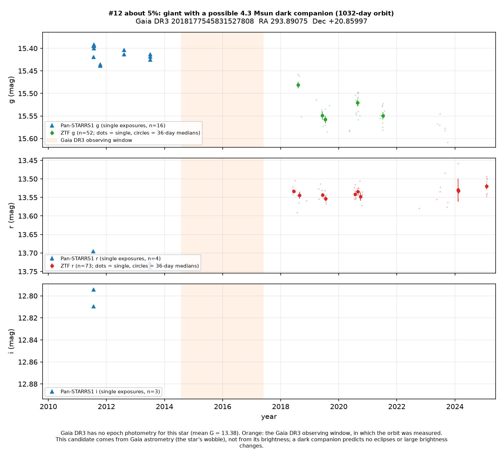
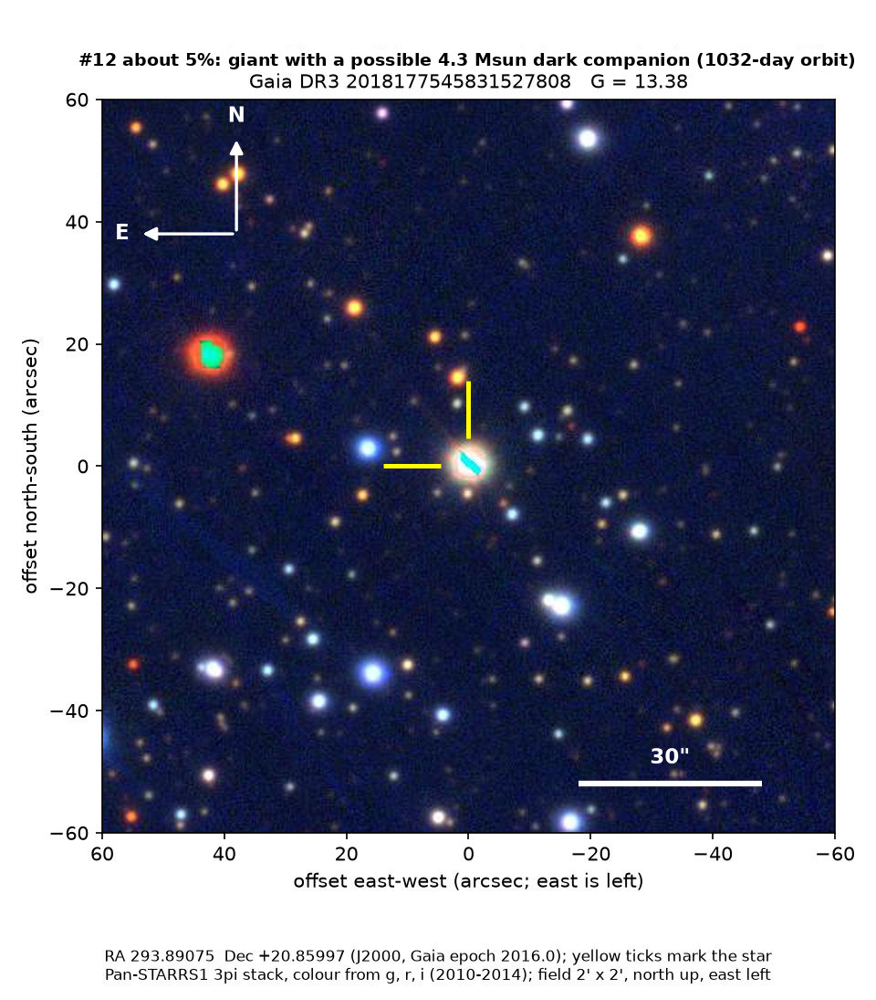

Professor of Mathematics
Paata Ivanisvili
Department of Mathematics, University of California, Irvine

Candidate 12: a giant star that may have a heavy, dark companion
Why this estimate. The fitted period is as long as the whole Gaia DR3 data set, so the orbit is poorly constrained, and the companion counts as dark only if the giant’s uncertain mass is right. Several earlier claims of dark companions to giant stars were later explained by companions that are luminous or have been stripped of their outer layers.
How to read the pictures. The finder chart shows a patch of sky two arcminutes across, about a fifteenth of the Moon’s width, with north up and east to the left. The star sits between the two yellow ticks, and the white bar is 30 arcseconds long. On a light curve the vertical axis is magnitude, a brightness scale on which larger numbers mean fainter stars, and it is drawn so that down means fainter. Here the orange band marks the years Gaia used for the orbit, not a change in brightness. Each survey uses slightly different filters, so each is compared with its own normal level.

What Gaia found. This is a cool giant star in Vulpecula, in the plane of the Milky Way, with a temperature of about 4,600 K, dimmed by about 2.4 magnitudes of interstellar dust. The orbit Gaia measured on the sky has a period of 1,032 days and is quite eccentric. If the giant has the 3.5 solar masses that Gaia estimates, the companion has 4.3 solar masses, with a range of 3.7 to 5.9. An ordinary star of 4.3 solar masses would outshine the giant, so the companion would have to be dark. The light curve is steady where it can be trusted, and the candidate rests on the wobble, not on a change in brightness.
Why the estimate is low. The orbital period is as long as the whole Gaia DR3 data set, 1,038 days, so the size and shape of the orbit are poorly pinned down. The conclusion also depends on an uncertain mass for the giant: if the giant has about 6 solar masses, the companion could be an ordinary star.
- Star
- Gaia DR3 2018177545831527808, a cool giant, about 4,600 K
- Location
- RA 293.89075°, Dec +20.85997° (J2000), in Vulpecula, in the plane of the Milky Way
- Distance
- roughly 2,900 parsecs, dimmed by about 2.4 magnitudes of interstellar dust
- Brightness
- Gaia G = 13.4
- Probability
- This candidate is unconfirmed. The percentage under the title is an estimate of the chance that it is a real, previously unrecorded case of the kind described. The estimate has not been checked by outside experts. See the introduction to all twelve candidates.
- Caveat
- The orbit is barely covered by the data Gaia has published, and a heavier giant would allow the companion to be an ordinary star.
